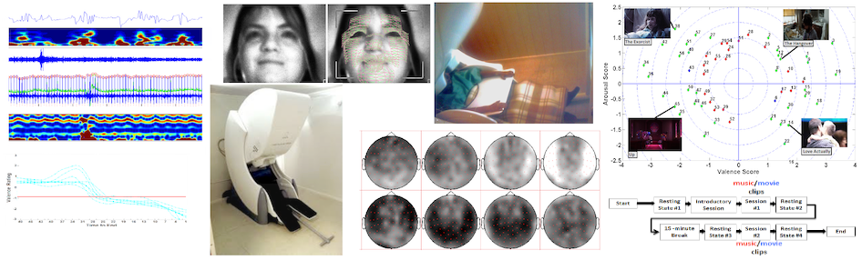

The Extracted Features that are explained in the paper and used for experimental analysis are shared via this page. We used MATLAB and the FieldTrip toolbox for signal analysis. The shared files have ".mat" extensions and can be read using MATLAB/OCTAVE.
Download from here, the features for Single Trial Classification including:
Electro-cardiography Features for Movie / Music video clips
Horizontal Electro-oculography Features for Movie / Music video clips
Trapezius Electro-myography Features for Movie / Music video clips
Magnetoencephalography DCT Features for Movie / Music video clips
Magnetoencephalography Welch Features for Movie / Music video clips
Facial Motion-Units Features for Movie / Music video clips
Low-level Multimedia Features for Movie / Music video clips
Users' Self-assessments for Movie / Music video clips
Order of Presentation for Movie / Music video clips
File size: 94 MB, File extension : ".zip"
Download from here, the features for Time-Continuous Regression including:
Low-level Multimedia Features for Movie / Music video clips
Magnetoencephalography DCT Features for Movie video clips
Seven Experts' Annotations for Movie video clips
File size: 351 MB, File extension : ".zip"
To get access to the documentation, please click here!